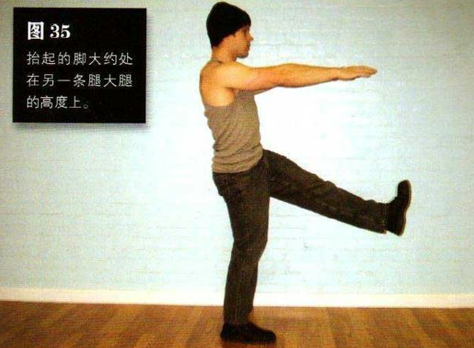
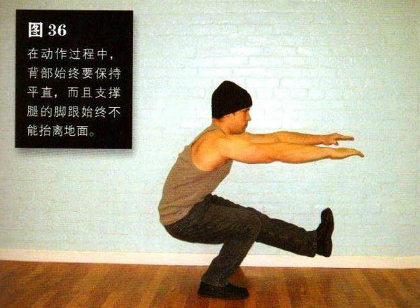

直立，只靠一条腿站立，另一条腿向前抬起，伸直或略微弯曲，抬起的脚大约处在另一条腿大腿的高度上，双手向胸前伸出
弯曲髋部和支撑腿的膝盖，直到膝关节几乎弯曲成 90°即大腿几乎与地面平行。在此过程中，抬起的那条腿应该始终在空中。这是该动作的最低点。暂停一会，然后单腿发力把自己推回到起始姿势。在动作过程中，背部始终要保持平直，而且支撑腿的脚跟始终不能抬离地面。
该练习是深蹲系列中第一个完全的单腿动作。攻克这个动作很重要，因为这可以让健身者的平衡能力得到极大的提升，从而为标准单腿深蹲打下基础。通过这个动作，健身者能够逐步掌握非支撑腿长时间离地的技巧。这可不容易，因为这需要非常强壮的 a 部屈肌，可大多数人的髋部屈肌都很弱。由于只有一条腿支撑身体，所以这个动作可以更好地增强我们的腿部力量。不过由于该动作的运动幅度只有正常的一半，所以在练习该动作时，应该辅以一个全幅动作—窄距深蹲或偏重深蹲都可以。
达到偏重深蹲升级标准的健身者，做该动作应该不成问题。如果你发现这个动作对你来说还是个挑战的话，那就先使用更小的动作幅度，随着体能的发展再逐步增加下蹲的深度即可。
初级标准：1 组，5 次（每侧）
中级标准：2 组，各 10 次（每侧）
高级标准：2 组，各 20 次（每侧）